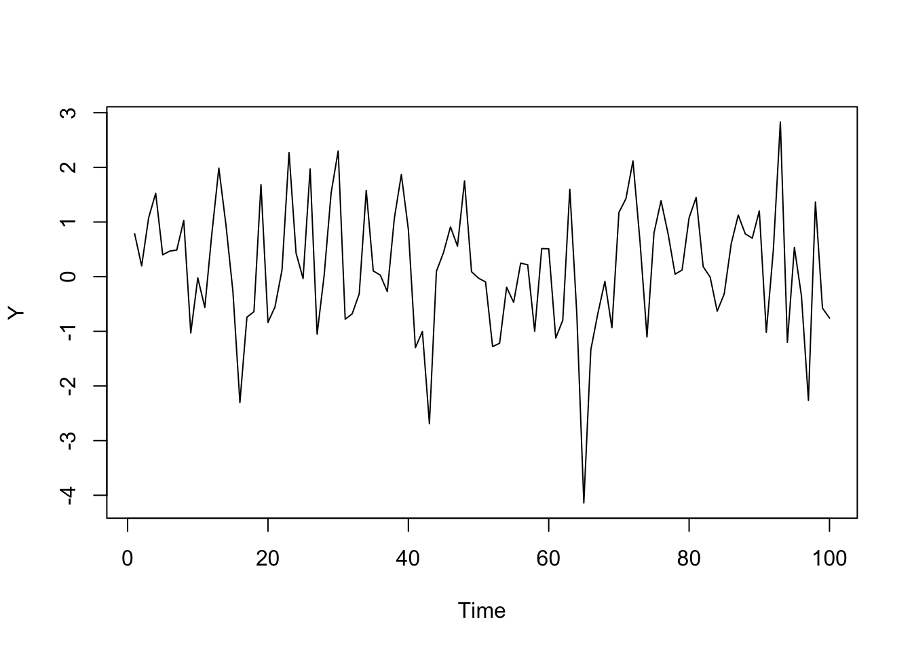
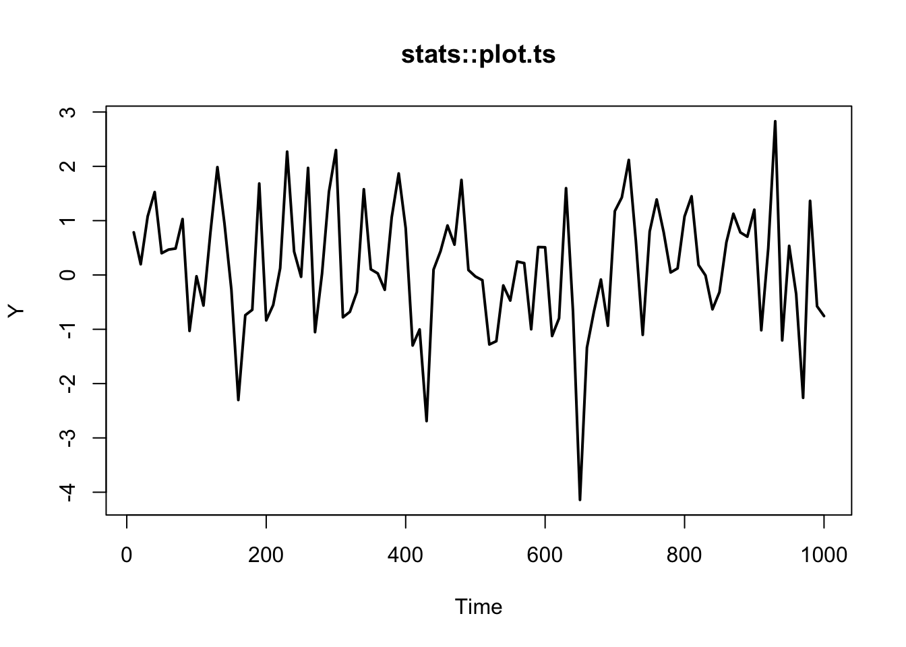
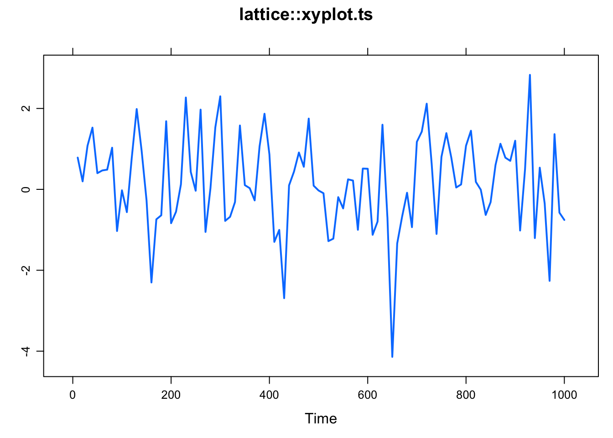
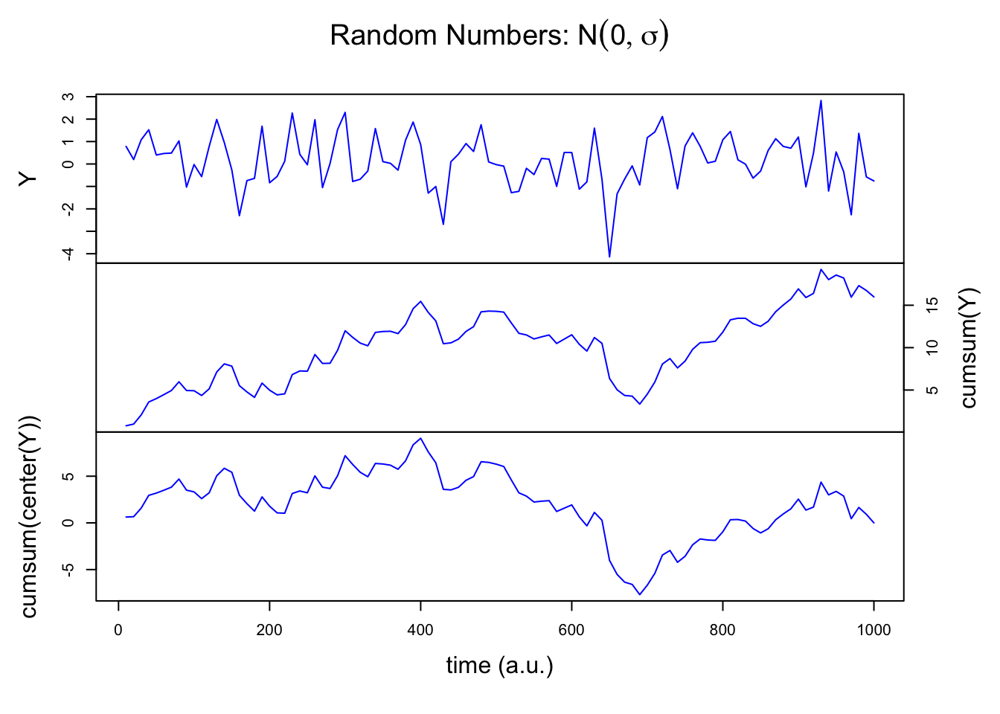
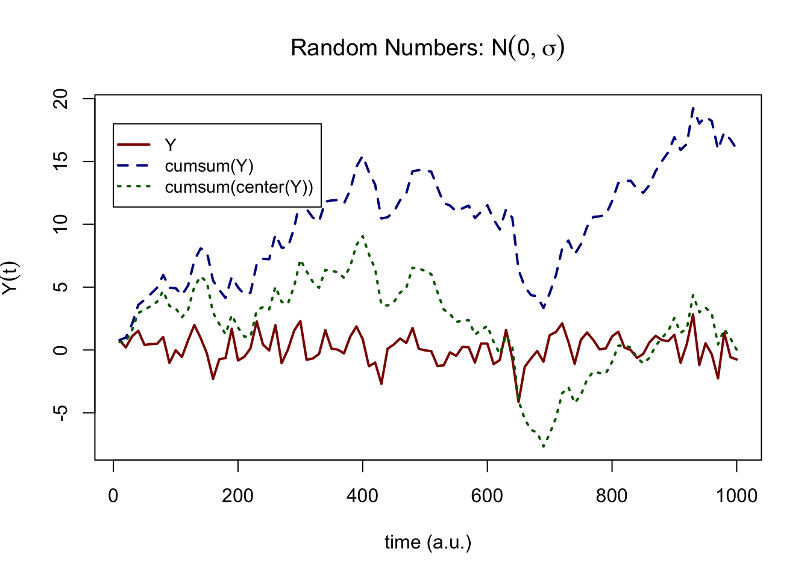
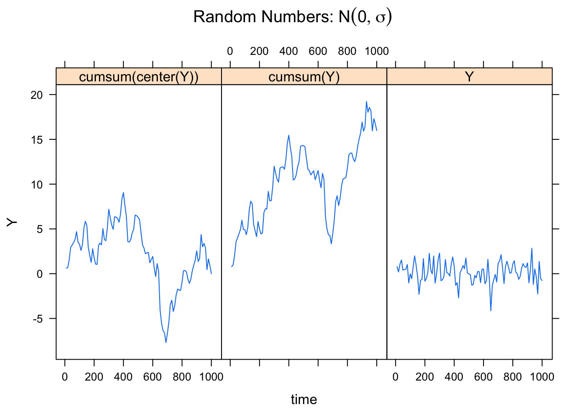

3.3 The time series object
A time series object is expected to have a time-dimension on the x-axis. This is very convenient, because R will generate the time axis for you by looking at the time series properties attribute of the object. Even though we are not working with measurement ourcomes, consider a value at a time-index in a time series object a sample:
Start- The value of time at the first sample in the series (e.g., \(0\), or \(1905\))End- The value of time at the last sample in the series (e.g., \(100\), or \(2005\))Frequency- The amount of time that passed between two samples, or, the sample rate (e.g., \(0.5\), or \(10\))
Examples of using the time series object.
# Get a timeseries of 100 random numbers
Y <- ts(rnorm(100))
# plot.ts
plot(Y)
# Get sample rate info
tsp(Y)## [1] 1 100 1# Extract the time vector
time(Y)## Time Series:
## Start = 1
## End = 100
## Frequency = 1
## [1] 1 2 3 4 5 6 7 8 9 10 11 12 13 14 15 16 17
## [18] 18 19 20 21 22 23 24 25 26 27 28 29 30 31 32 33 34
## [35] 35 36 37 38 39 40 41 42 43 44 45 46 47 48 49 50 51
## [52] 52 53 54 55 56 57 58 59 60 61 62 63 64 65 66 67 68
## [69] 69 70 71 72 73 74 75 76 77 78 79 80 81 82 83 84 85
## [86] 86 87 88 89 90 91 92 93 94 95 96 97 98 99 100For now, these values are in principle all arbitrary units (a.u.). These settings only make sense if they represent the parameters of an actual measurement procedure.
It is easy to adjust the time vector, by assigning new values using tsp() (values have to be possible given the timeseries length). For example, suppose the sampling frequency was \(0.1\) instead of \(1\) and the Start time was \(10\) and End time was \(1000\).
# Assign new values
(tsp(Y) <- c(10, 1000, .1))## [1] 1e+01 1e+03 1e-01# Time axis is automatically adjusted
time(Y)## Time Series:
## Start = 10
## End = 1000
## Frequency = 0.1
## [1] 10 20 30 40 50 60 70 80 90 100 110 120 130 140
## [15] 150 160 170 180 190 200 210 220 230 240 250 260 270 280
## [29] 290 300 310 320 330 340 350 360 370 380 390 400 410 420
## [43] 430 440 450 460 470 480 490 500 510 520 530 540 550 560
## [57] 570 580 590 600 610 620 630 640 650 660 670 680 690 700
## [71] 710 720 730 740 750 760 770 780 790 800 810 820 830 840
## [85] 850 860 870 880 890 900 910 920 930 940 950 960 970 980
## [99] 990 10003.3.1 Plotting a ts object as a time series
Depending on which packages you use, there will be different settings applied to time series objects created by ts(). Below are some examples of differences between plotting routines.
require(lattice) # Needed for plotting
require(latticeExtra) # Needed for plotting
# stats::plot.ts
plot(Y, lwd = 2, main = "stats::plot.ts")
# lattice::xyplot.ts
xyplot(Y, lwd = 2, main = "lattice::xyplot.ts")
3.3.2 Plotting multiple time series in one figure
Plot multiple timeseries in frames with plot.ts() in package::stats. This function takes a matrix as input, here we use cbind( ... ).
# stats::plot.ts
plot(cbind(Y,
cumsum(Y),
cumsum(c(0,diff(Y)))
),
yax.flip = TRUE, col = "blue", frame.plot = TRUE)
title(main = expression(paste("Random Numbers: ",N(0,sigma))),
xlab = "time (a.u.)")
Plot multiple timeseries in one graph with ts.plot() in package::graphics. This function can handle multiple ts objects as arguments.
# graphics::ts.plot
ts.plot(Y,
cumsum(Y),
cumsum(c(0,diff(Y))),
gpars = list(xlab = "time (a.u.)",
ylab = expression(Y(t)),
main = expression(paste("Random Numbers: ",N(0,sigma))),
lwd = rep(2,3),
lty = c(1:3),
col = c("darkred","darkblue","darkgreen")
)
)
legend(0, -10, c("Y","cumsum(Y)", "cumprod(Y)"), lwd = rep(2,3), lty = c(1:3), col = c("darkred","darkblue","darkgreen"), merge = TRUE, cex=.9)
Use xyplot() in package::lattice to create a plot with panels. The easiest way to do this is to create a dataset in so-called “long” format. This means the variable to plot is in 1 column and other variables indicate different levels, or conditions under which the variable was observed or simulated.
Function ldply() is used to generate \(Y\) for three different settings of \(r\). The values of \(r\) are passed as a list and after a function is applied the result is returned as a dataframe.
require(plyr) # Needed for function ldply()
# Create a long format dataframe for various values for `r`
data <- cbind.data.frame(Y = c(as.numeric(Y), cumsum(Y), cumsum(c(0,diff(Y)))),
time = c(time(Y), time(Y), time(Y)),
label = factor(c(rep("Y",length(Y)), rep("cumsum(Y)",length(Y)), rep("cumsum(diff(Y))",length(Y))))
)
# Plot using the formula interface
xyplot(Y ~ time | label, data = data, type = "l", main = expression(paste("Random Numbers: ",N(0,sigma))))